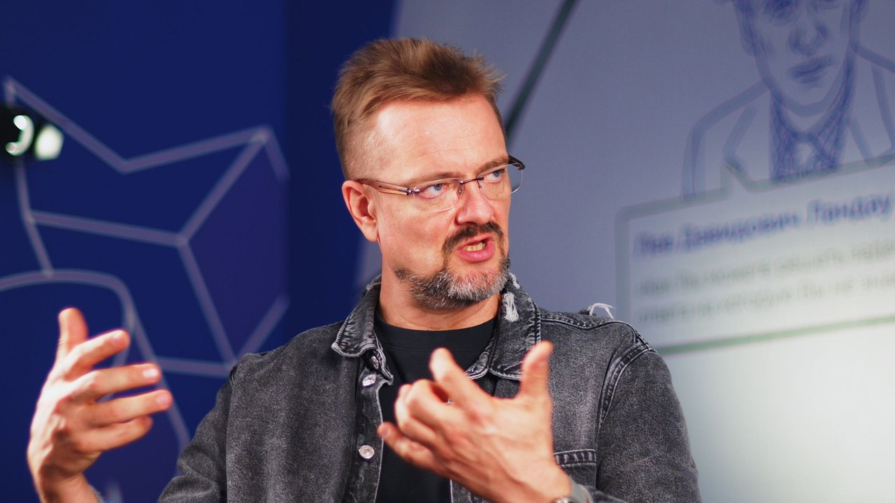

Александр Пушной
Физик по образованию, музыкант, ведущий «Галилео»
Выпуск уже записан
Разговор выйдет 20 ноября 2026. В день выхода здесь появятся плеер VK Видео, ссылки на YouTube и Rutube,
ключевые тезисы и цитаты.

01О герое
Александр Пушной — российский музыкант, автор песен, телеведущий и популяризатор науки с физическим образованием. Широкой аудитории знаком по научно-развлекательным программам, включая «Галилео». В его проектах научные идеи раскрываются через эксперименты, юмор и наглядные объяснения.
02О чём разговор
- Физик и музыкант. Как в одном человеке уживаются физик по образованию и музыкант-шоумен?
- Наука как шоу. Как придумываются научные эксперименты для телевидения и сцены?
- Наука и молодёжь. Как увлечь школьника физикой, если она кажется ему скучной?
- Взгляд в будущее. Какой вы видите научно-популярную культуру в России через 10 лет?